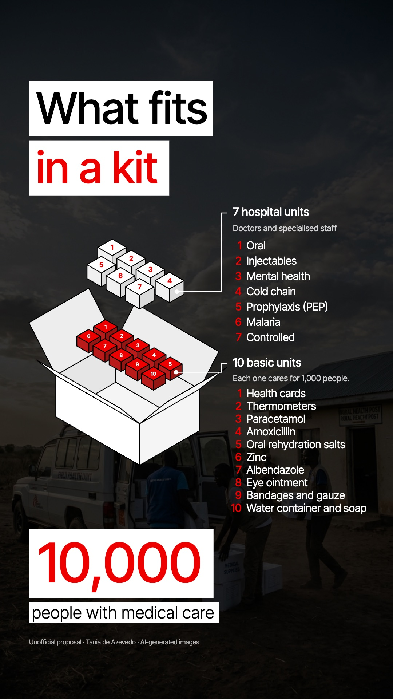
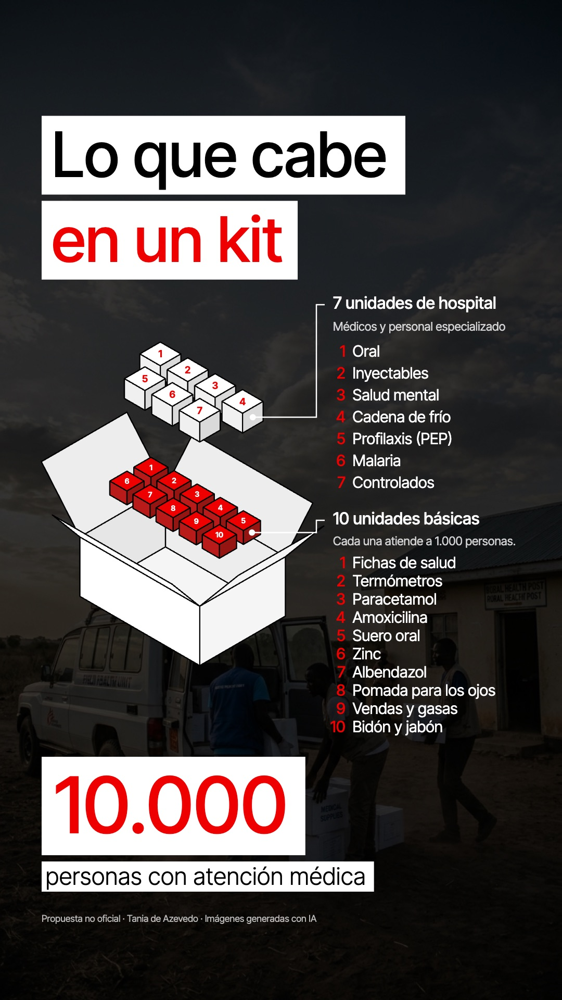
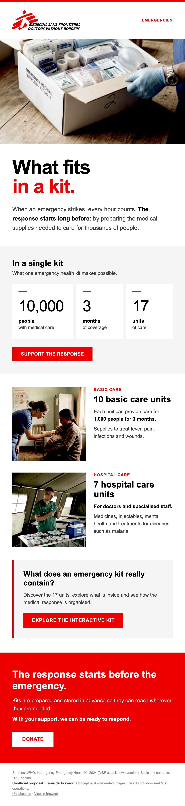
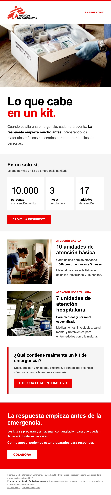

What fits in a kit.
Lo que cabe en un kit.
A small campaign made with MSF's brand guidelines to explain, in a simple way, the WHO emergency health kit that MSF uses. One idea, adapted to web, social media, newsletter and motion, in English and Spanish.
Una pequeña campaña hecha con el manual de marca de MSF para explicar, de forma sencilla, el kit de emergencia sanitaria de la OMS que usa MSF. Una idea adaptada a web, redes, newsletter y motion, en español e inglés.
Technical information, made clear for everyone.
Información técnica, clara para todo el mundo.
An emergency health kit is medical logistics: units, modules, medicines, quantities. The goal was to make anyone understand in seconds what it is and, above all, what it makes possible. This is the part of design I enjoy most: making important information visual and clear.
Un kit de emergencia sanitaria es logística médica: unidades, módulos, medicamentos, cantidades. El objetivo era que cualquiera entendiera en segundos qué es y, sobre todo, qué permite conseguir. Es la parte del diseño que más disfruto: hacer visual y clara la información importante.
What's missing without a kit. What fits in a kit.
Lo que falta sin un kit. Lo que cabe en un kit.
Two states of the same box: closed, it shows the absence; open, the response. An isometric box with 17 units works as the visual system across every format.
Dos estados de una misma caja: cerrada, muestra la ausencia; abierta, la respuesta. Una caja isométrica con 17 unidades funciona como sistema visual en todos los formatos.
Interactive infographic
Infografía interactiva
Try it here: open and close the kit, and move over each unit to see what it holds. Works with mouse, touch and keyboard.
Pruébala aquí: abre y cierra el kit, y pasa por cada unidad para ver qué lleva. Funciona con ratón, táctil y teclado.
Motion pieces and story
Motion y story
Vertical, for Reels and Stories, and made to work without sound. Two 15-second versions, illustrated and with photos, and a story with the full kit.
Vertical, para Reels y Stories, y pensado para funcionar sin sonido. Dos versiones de 15 segundos, ilustrada y con fotos, y una story con el kit completo.


Instagram carousel
Carrusel de Instagram
On social media the tone is closer: photos, short sentences and one idea per slide, in the style of MSF's own Instagram.
En redes el tono es más cercano: fotos, frases cortas y una idea por diapositiva, en la línea del Instagram de MSF.
Newsletter
Newsletter
A responsive email, 600 px wide, built with tables and inline styles: the standard technique to make it look right in Gmail, Outlook and on mobile.
Email responsive de 600 px, maquetado con tablas y estilos en línea: la técnica estándar para que se vea bien en Gmail, Outlook y en el móvil.
Subject line: "10,000 people. 3 months. One kit."
Preview text: See what's inside and how it is prepared to respond when it matters most.
Asunto: «10.000 personas. 3 meses. Un kit.»
Texto de vista previa: Descubre qué contiene y cómo se prepara para responder cuando más se necesita.


Layout proposal: Activity Report 2025
Propuesta de maquetación: Memoria de actividades 2025
A few pages of the MSF Spain (OCBA) Activity Report 2025, laid out with the same visual system. Real data from the report: long tables become charts and key figures that can be read at a glance. In Spanish, like the original.
Unas páginas de la Memoria de actividades 2025 de MSF España (OCBA), maquetadas con el mismo sistema visual. Datos reales de la memoria: las tablas largas pasan a gráficos y cifras clave que se leen de un vistazo.
Click the corners or drag to turn the pages.
Pulsa en las esquinas o arrastra para pasar las páginas.
Design decisions
Decisiones de diseño
- Real dataAll figures come from the WHO Interagency Emergency Health Kit 2024, the kit MSF uses in its own version.
- Datos realesTodas las cifras salen del Interagency Emergency Health Kit 2024 de la OMS, el kit que MSF usa en su propia versión.
- MSF brand guidelines and msf.esRed #EE0000 on screen and #D7211E in print, only to highlight. Inter Tight replaces Atlas Grotesk (licensed), with the type weights and components of msf.es.
- Manual de marca de MSF y msf.esRojo #EE0000 en pantalla y #D7211E en impresión, solo para destacar. Inter Tight sustituye a Atlas Grotesk (con licencia), con los pesos y componentes de msf.es.
- Plain languageNo formulas or jargon. Short sentences anyone can follow: "Each one cares for 1,000 people. Together, they care for 10,000."
- Lenguaje sencilloSin fórmulas ni tecnicismos. Frases cortas que cualquiera entiende: «Cada una atiende a 1.000 personas. Juntas, atienden a 10.000.»
- AccessibilityKeyboard navigation, alternative text, layouts for mobile and respect for the "reduce motion" setting on every device.
- AccesibilidadNavegación con teclado, texto alternativo, versiones para móvil y respeto por el ajuste de «reducir movimiento» en cada dispositivo.